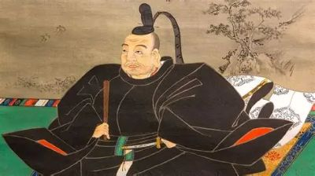
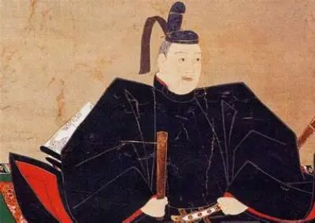
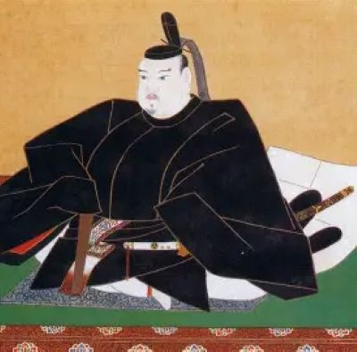
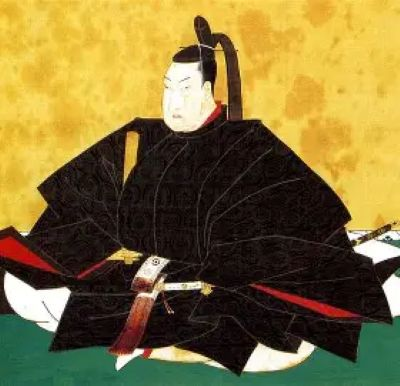
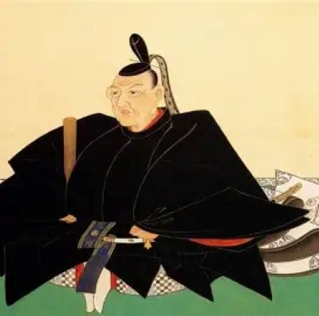
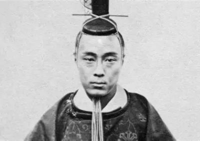

The shogun was the highest-ranking samurai and the military leader of Japan in the Edo period.

Tokugawa Ieyasu founded the Tokugawa shogunate in 1603. He brought peace to Japan after many years of war and established a stable government in Edo.

Tokugawa Hidetada was the second shogun and the son of Ieyasu. He continued his father’s policies and helped strengthen the Tokugawa government.

Tokugawa Iemitsu was the third shogun. He established strict rules for feudal lords and strengthened the shogunate’s control over Japan.

Tokugawa Tsunayoshi was known for the "Laws of Compassion for Living Things." He promoted kindness to animals, although some people thought his policies were too strict.

Tokugawa Yoshimune was the eighth shogun and introduced many reforms. He worked to improve the economy and reduce financial problems in the government.

Tokugawa Yoshinobu was the last shogun of the Tokugawa shogunate. He returned power to the emperor, which led to the end of the shogunate.